Trên tay máy in móng tự động O2Nail: gọn, nhẹ, dễ dùng, in nhanh, hình đẹp
Máy in móng tự động O2Nail: gọn, nhẹ, dễ dùng, in nhanh, hình đẹp
Nếu bạn không thể dành ra hàng giờ đồng hồ ngồi ngoài tiệm làm móng để vẽ những hình ảnh ưng ý, không muốn đầu tư hàng trăm ngàn mỗi lần đi sơn móng tay,… thì có lẽ chiếc máy in móng tay 3D O2 Nails sẽ là thiết bị tự in cho bạn những hình ảnh vui vẻ, chất lượng tương đối trên móng. Bỏ ra số tiền 650 đô la (ở VN là khoảng 13,5 triệu) để sở hữu máy cùng một hộp mực tặng kèm, bạn sẽ có thể in được 250 móng với đầy đủ những hoa văn trong bộ sưu tập có sẵn lẫn bất cứ hình nào mà bạn muốn in. Vị chi, khoảng 3 ngàn tư cho mỗi móng. Khi hết mỗi hộp mực có thể mua lại với giá khoảng 50 đô la.
Kích thước:
Kích thước của O2 Nails cũng tương đối nhỏ gọn, cỡ một quả bưởi hoặc dưa hấu Phần vỏ bên ngoài bằng nhựa, hoàn thiện tương đối sắc sảo với nhiều lựa chọn màu sắc khác nhau. Chúng ta có thể mở nắp ra để xem được cấu trúc bên trong gồm các thành phần chính như 1 cartridge chứa mực in, 1 camera và hệ thống dẫn đầu in vào móng tay người dùng.
Hoạt động:
Cách máy hoạt động cũng khá đơn giản. Đầu tiên chúng ta sẽ kết nối với O2 Nails thông qua wifi. Trong ứng dụng đi kèm trên iOS hoặc Android, chúng ta có thể cân chỉnh được vị trí của móng, của camera và đầu phun. Khi muốn in móng, người dùng chỉ cần đặt ngón tay vào vị trí bên trong máy, lựa chọn các mẫu thiết kế móng từ thư viện có sẵn hoặc chèn bất cứ hình nào. Sau khi đã scale, chọn kích thước, tỷ lệ hình trên móng thì chỉ cần nhấn nút in trên điện thoại, đợi khoảng 10 giây là máy in xong.
Cách dùng:
Theo chỉ dẫn của hãng, người dùng sẽ được tặng kèm một chai nước bôi lên móng trước khi sơn và một chai nước đánh bóng sau khi đã in xong. Nhìn chung chất lượng hình ảnh sau khi in khá tốt, sắc nét, đặc biệt là chi tiết khá. Tuy nhiên cần phải cân chỉnh thật sự cẩn thận trước khi in bởi nếu sai lệch thì kết quả ra sẽ rất gớm. Mình in thử mấy lần mới hiểu rõ cách in, tay chân tèm lem màu hết luôn.
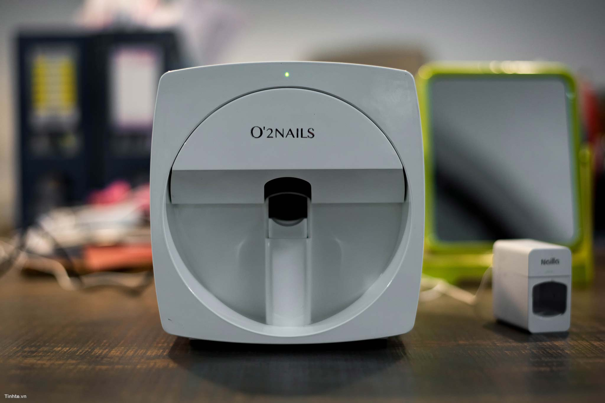
Đây là chiếc máy in móng O2Nail.
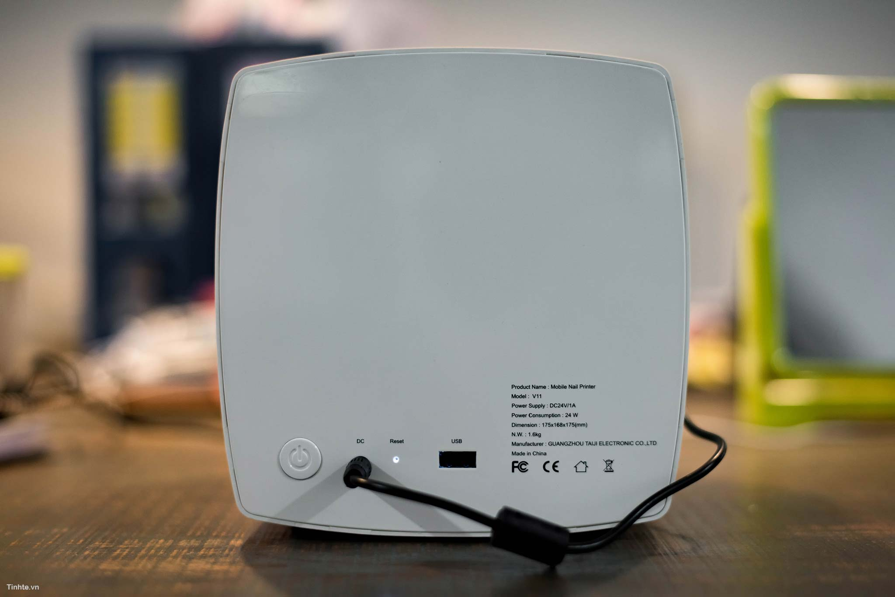
Mặt sau cũng khá đơn giản với ổ cắm điện DC, nút reset, cổng USB và một số thông tin của nhà sản xuất. Máy làm tại Quảng Châu.
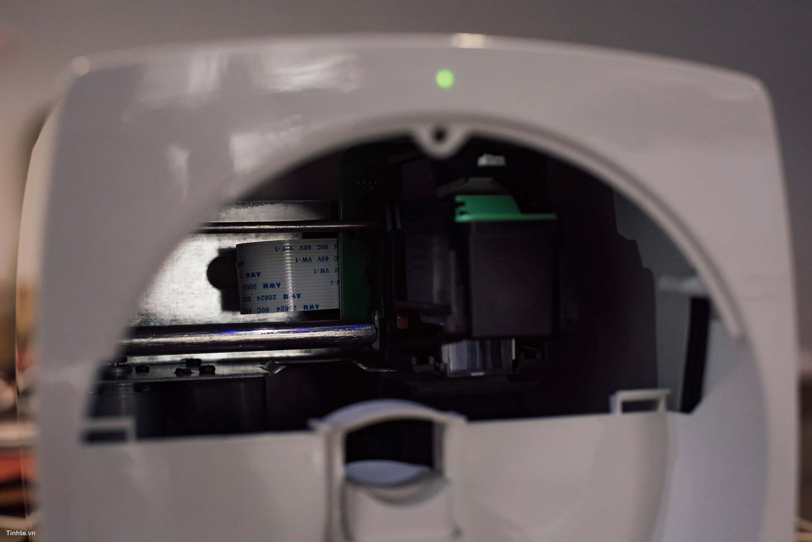
Mở nắp ra xem, bên trong cũng khá đơn giản, hộp mực có thể tháo rời.
Khi xài thì chỉ cần điều chỉnh ứng dụng trên điện thoại, sau đó đặt ngón tay vào máy, nhấn xuống sẽ có một lẫy đẩy lên nhằm cố định ngón tay lại khi in.
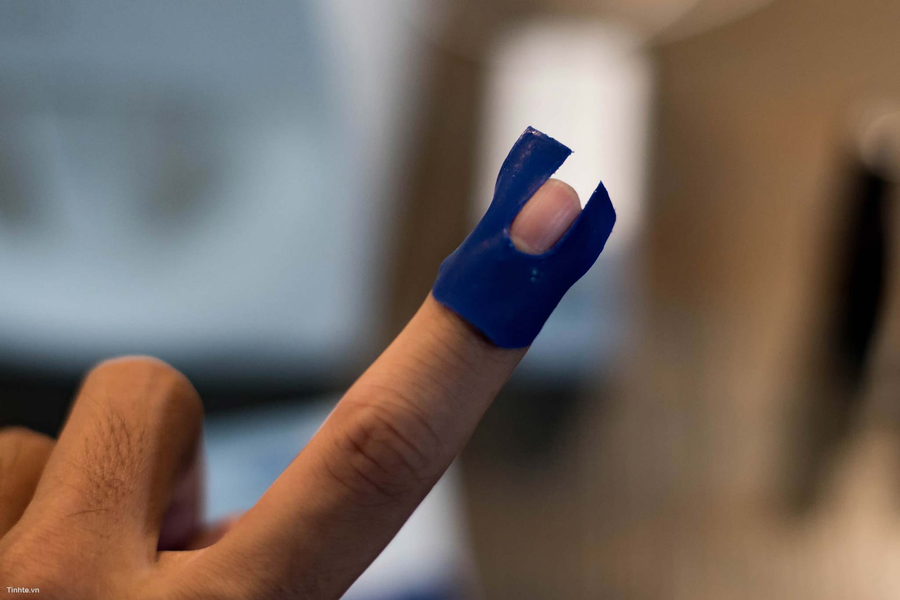
Đừng quên dùng các miếng dán đi kèm để không bị lem ra phần da xung quanh móng.
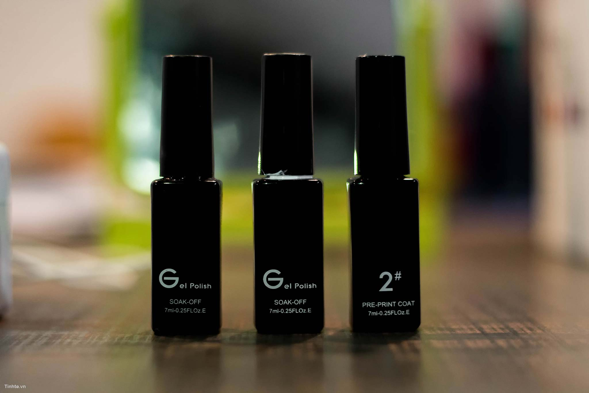
Những dung dịch dùng trước và sau khi in.
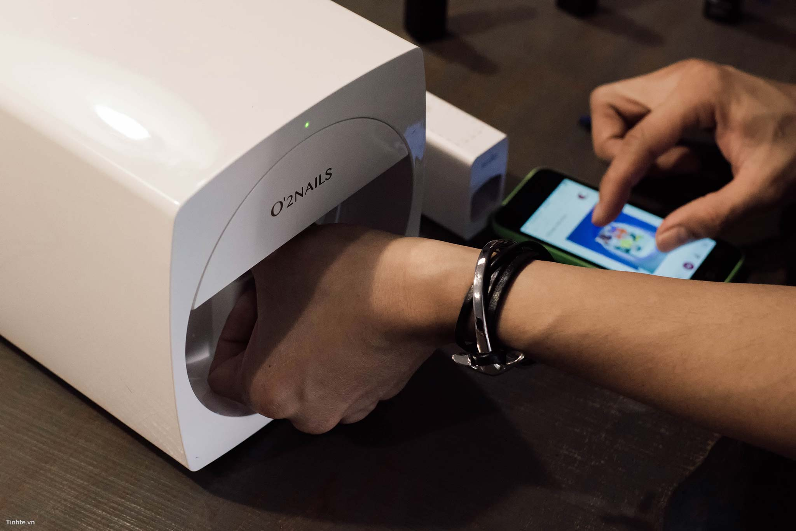
Chình trên điện thoại rồi in thôi
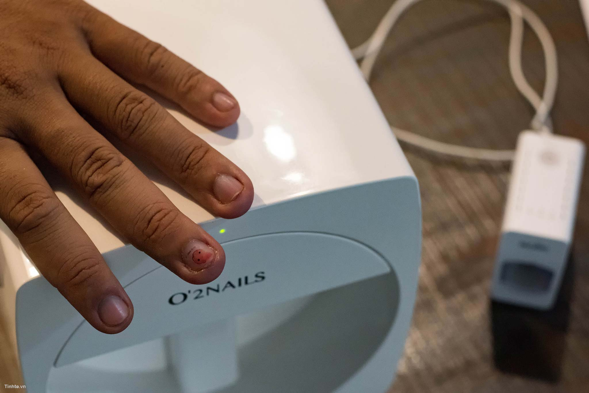
Sản phẩm sau khi in, sắc nét và khá dễ thương. Nếu nhìn kỹ đọc được cả chữ luôn.
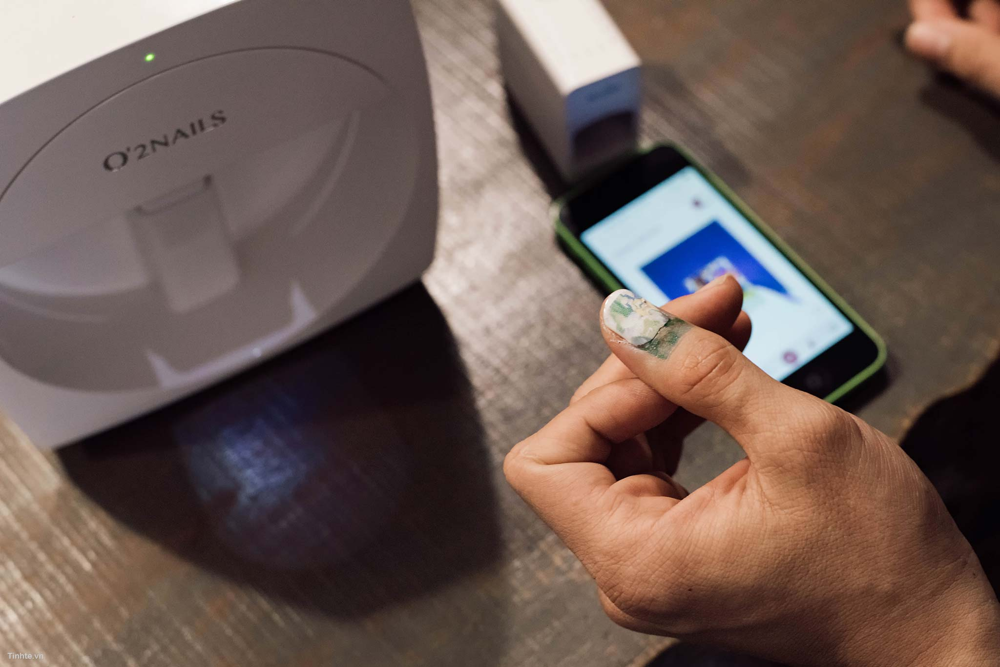
Cân chỉnh sai, in bị lỗi tèm lem luôn
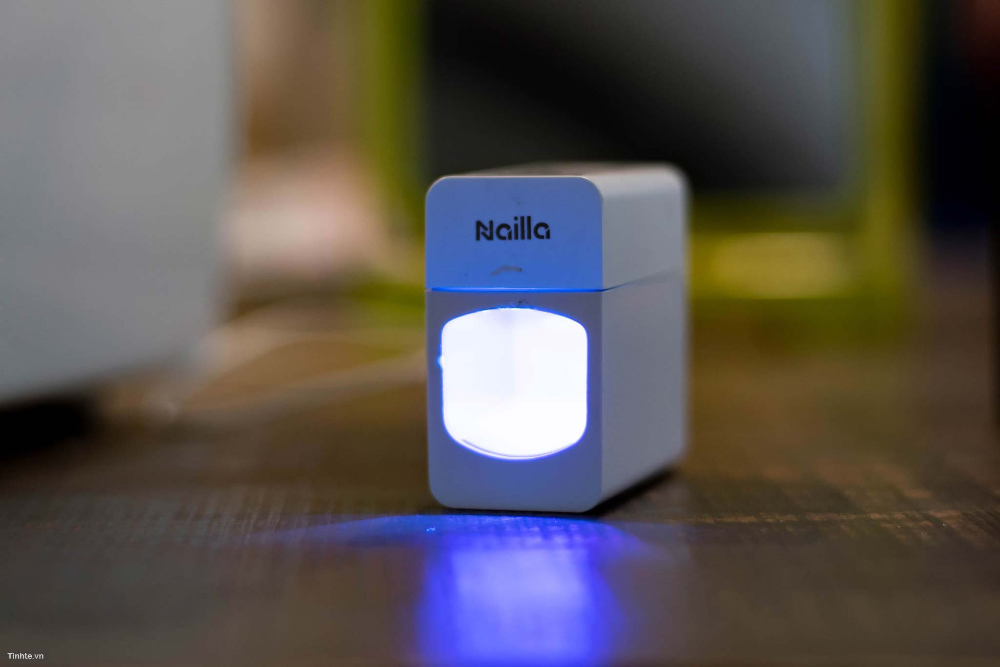
Chiếc máy sấy móng có thể mua thêm, sử dụng cổng USB để cấp điện, dùng để tạo móng siêu cứng.
Thêm một số hình ảnh của máy in móng O2 Nail V11
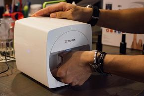
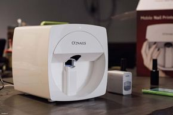
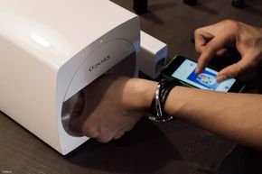
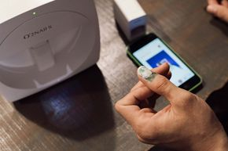
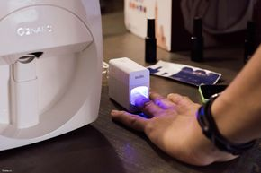
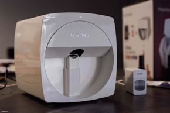
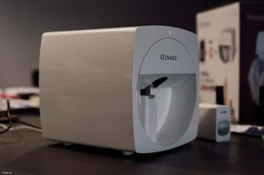
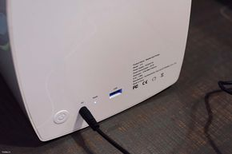
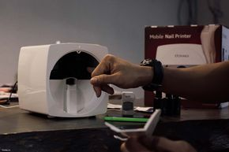
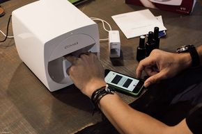
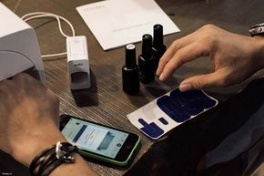
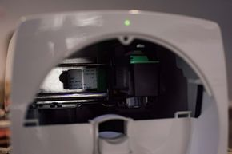
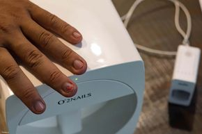
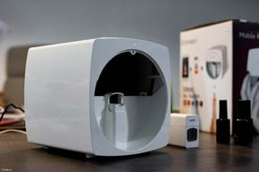
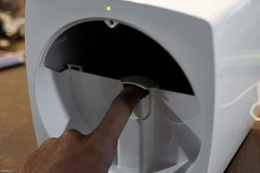
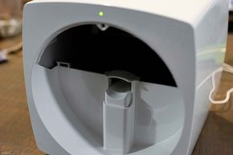
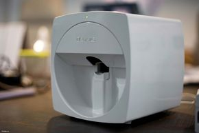
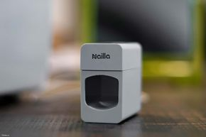
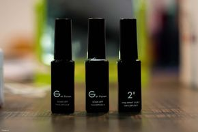
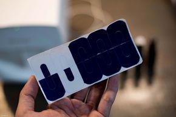
Cần nạp mực hoặc sửa máy in tận nơi? Mực In Trường Phát có mặt trong 30 phút tại TP.HCM — in test trước khi tính tiền, bảo hành 1 tháng.
0908.327.123 · 0819.007.394 (Zalo cả 2 số)